62
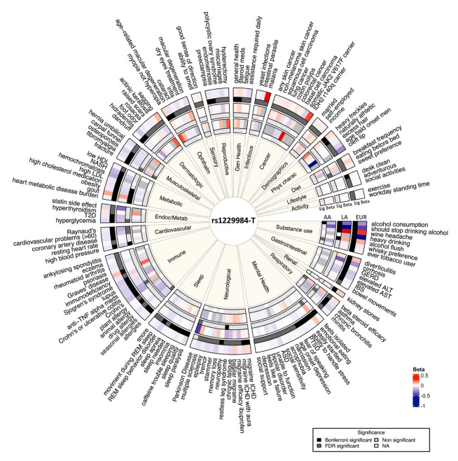A phenome-wide association and Mendelian randomisation study of alcohol use variants in a diverse cohort comprising over 3 million individuals
eBioMedicine (2024)
Summary: Mendelian randomization identifies many causal effects of alcohol consumption
Links: eBioMedicine
61
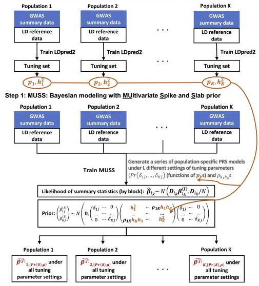MUSSEL: enhanced Bayesian polygenic risk prediction leveraging information across multiple ancestry groups
Cell Genomics (2024)
Summary: Cross ancestry polygenic risk prediction
Links: Cell Genomics
60
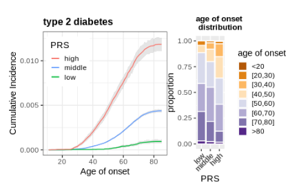Prospective analysis of incident disease among individuals of diverse ancestries using genetic and conventional risk factors
medRxiv (2023)
Summary: Genetics and incident disease risk
Links: medRxiv
59
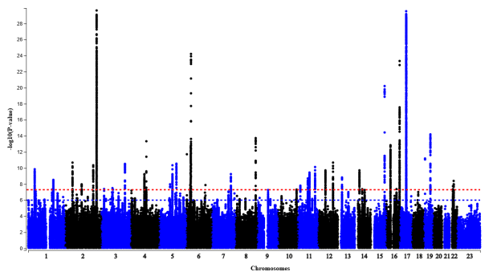Genome-wide association study identifies 48 common genetic variants associated with handedness
Nature Human Behaviour (2020)
Summary: A huge GWAS of handedness
Links: Nature Human Behaviour bioarxiv
58
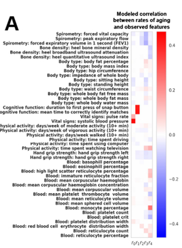Inferring Multidimensional Rates of Aging from Cross-Sectional Data
Proc Mach Learn Res. 2019 Apr; 89: 97–107.
Summary: Machine learning for inferring rates of aging
Links: PMC
57
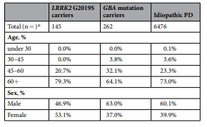Self-report data as a tool for subtype identification in genetically-defined Parkinson’s disease
Scientific Reports volume 8, Article number: 12992 (2018)
Summary: Validation of self-reported PD data
Links: Scientific Reports
56
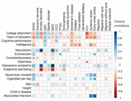Analysis of shared heritability in common disorders of the brain
Science 22 Jun 2018: Vol. 360, Issue 6395, eaap8757
Summary: Genetic sharing between 25 disorders of the brain
Links: Science
55
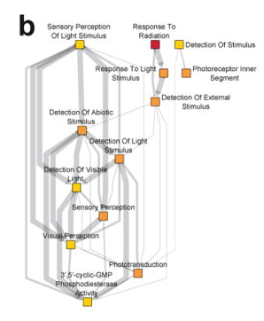Genome-wide association meta-analysis highlights light-induced signaling as a driver for refractive error
Nat Genet. 2018; 50, 834-–848
Summary: 161 loci for refractive error in a multi-ethnic cohort
Links: PMC Nature Genetics
54
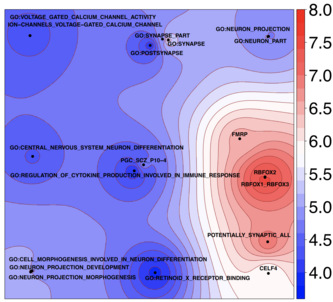Genome-wide association analyses identify 44 risk variants and refine the genetic architecture of major depression
Nat Genet. 2018; 50, 668--681
Summary: 44 loci for major depression
Links: Nature Genetics bioRxiv
53
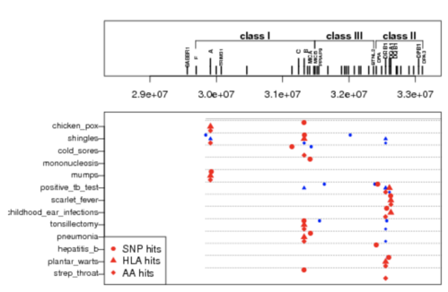Genome-wide association and HLA region fine-mapping studies identify susceptibility loci for multiple common infections
Nat Commun. 2017; 8; 599
Summary: Many links between the HLA and infectious disease
Links: Nature Communications bioRxiv
52
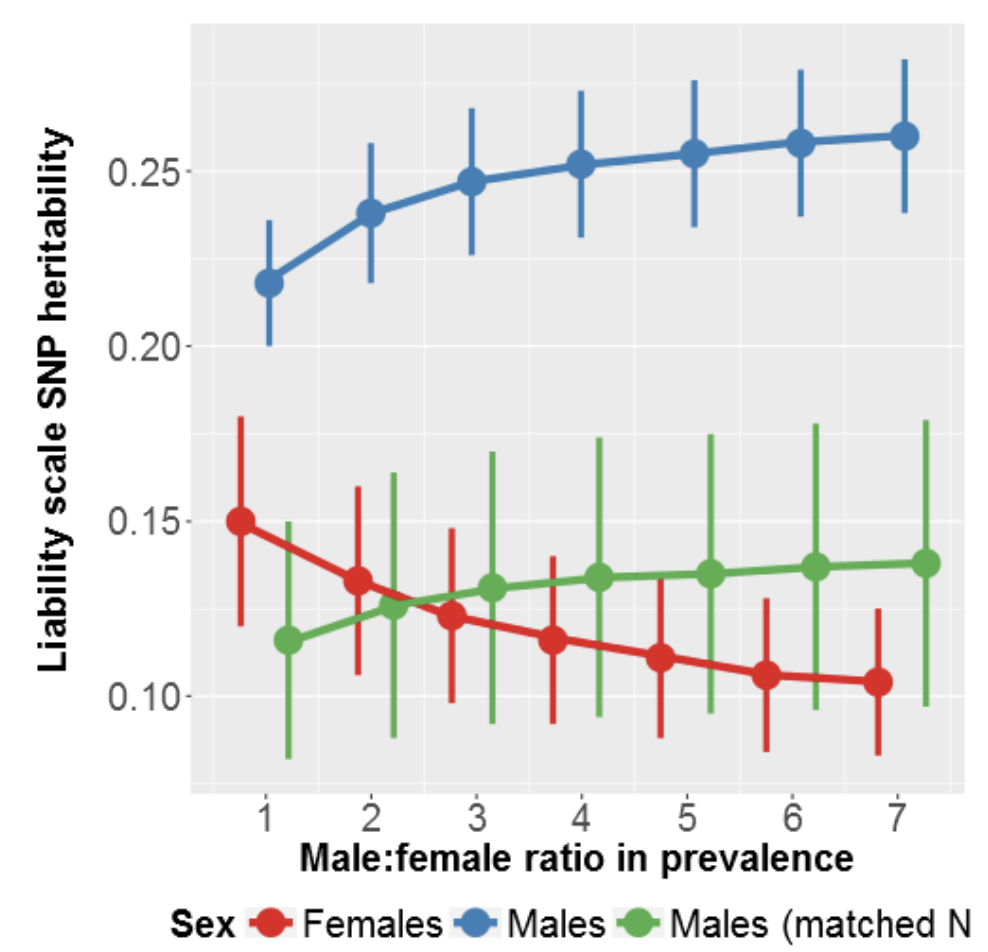A genetic investigation of sex bias in the prevalence of attention deficit hyperactivity disorder
bioRxiv (2017)
Summary: Similar polygenic ADHD burden across sex.
Links: PubMed Central bioRxiv
51
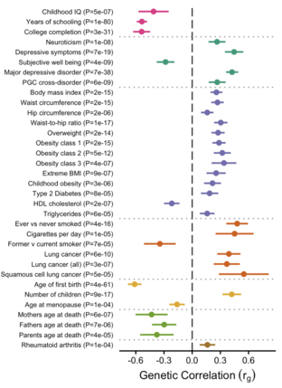Discovery Of The First Genome-Wide Significant Risk Loci For ADHD
Nature Genetics (2019)
Summary: 12 loci for ADHD.
Links: Nature Genetics bioRxiv
50
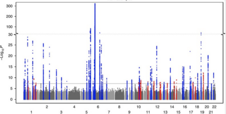Large scale meta-analysis characterizes genetic architecture for common psoriasis associated variants
Nat Commun. 2017; 8: 15382
Summary: 16 new associations with psoriasis
Links: PMC
49
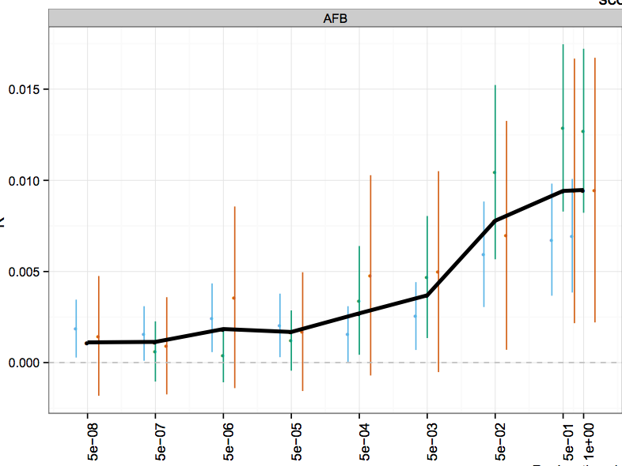Genome-wide analysis identifies 12 loci influencing human reproductive behavior
Nature Genetics 48, 1462–1472 (2016)
Summary: GWAS of age at first birth / number of children.
Links: Nature Genetics
48
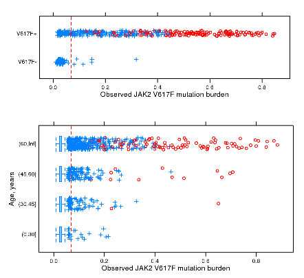Germline variants predispose to both JAK2 V617F clonal hematopoiesis and myeloproliferative neoplasms
Blood (2016) doi:10.1182/blood-2015-06-652941
Summary: Germline variants predisposing to myeloproliferative neoplasms and to JAK2 V617F clonal hematopoiesis.
Links: Blood
47
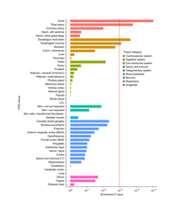Meta-analysis of 375,000 individuals identifies 38 susceptibility loci for migraine
Nature Genetics (2016) doi:10.1038/ng.3598
Summary: A huge GWAS of migraines.
Links: Nature Genetics PubMed Central
46
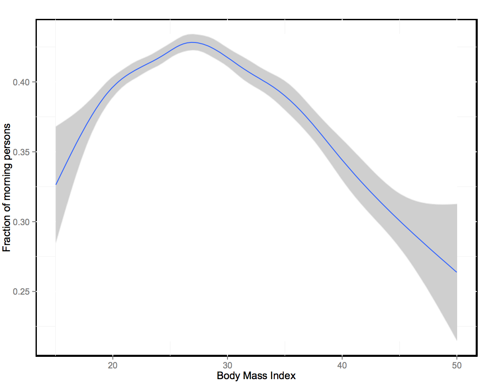GWAS of 89,283 individuals identifies genetic variants associated with self-reporting of being a morning person
Nature Communications 7, Article number: 10448, Feb 2016.
Summary: On the genetics of circadian rhythms
Links: Nature Communications
Press: The Verge
45
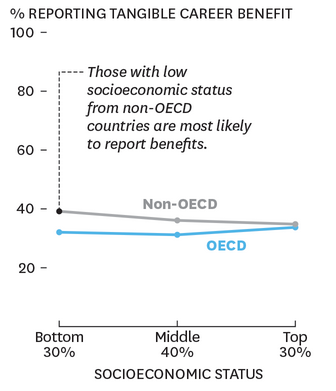Who's Benefiting from MOOCs, and Why
Harvard Business Review, September 22, 2015.
Summary: Among learners who complete courses, MOOCs do have a real impact.
Links: Harvard Business Review
Press: Financial Times USA Today Inc. Chronicle of Higher Education
44
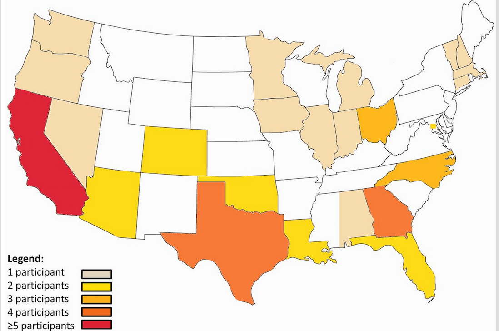Virtual research visits and direct-to-consumer genetic testing in Parkinson’s disease
Digital Health, Jun 2015.
Summary: In depth, virtual visits of Parkinson's disease patients.
Links: Digital Health PubMed Central
43
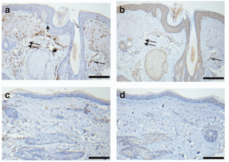Assessment of the Genetic Basis of Rosacea by Genome-Wide Association Study
Journal of Investigative Dermatology, March 2015.
Summary: HLA associations with rosacea
Links: PubMed Central JID
42
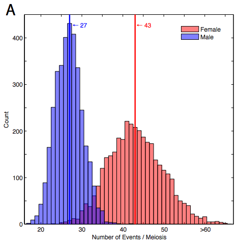Escape from crossover interference increases with maternal age
Nature Communications, 6, Feb 2015.
Summary: Analysis of recombination rate and hotspot usage with respect to age.
Links: Nature Communications arxiv
41
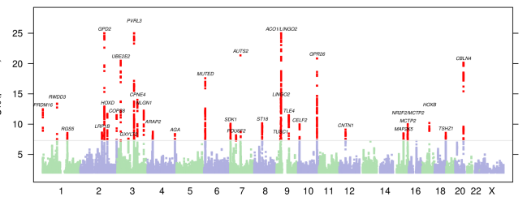40
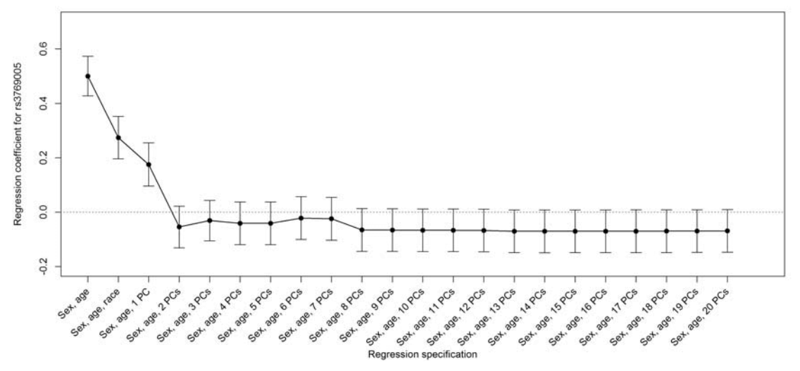Replicability and Robustness of Genome-Wide-Association Studies for Behavioral Traits
Psychological Science, Nov 2014, vol. 25, no. 11, 1975-1986.
Summary: Replication of educational attainment associations
Links: Psych Sci
39
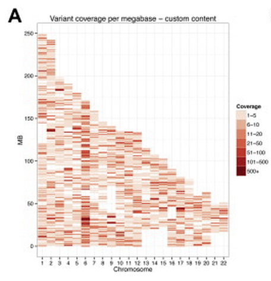NeuroX, a Fast and Efficient Genotyping Platform for Investigation of Neurodegenerative Diseases
Neurobiology of Aging, 4 Aug 2014.
Summary: A cheap genotyping chip for neurodegenerative disease research.
Links: DOI
38
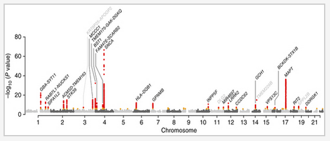Large-scale meta-analysis of genome-wide association data identifies six new risk loci for Parkinson's disease
Nature Genetics (2014) doi:10.1038/ng.3043
Summary: Six new loci for Parkinson's disease in the largest meta-analysis to date
Links: Nature Genetics PubMed Central
37
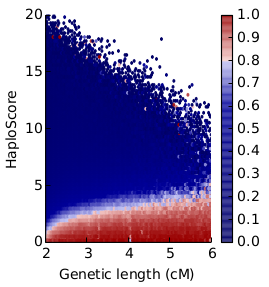36
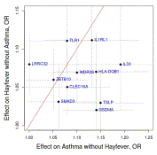Genome-wide association analysis identifies 11 risk variants associated with the asthma with hay fever phenotype
Journal of Allergy and Clinical Immunology, 31 December 2013
Summary: Meta-analysis of hay fever with asthma
Links: JACI ScienceDirect
35
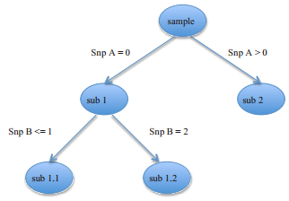Gradiant Boosting as a SNP filter: an evaluation using simulated and hair morphology data
Journal of Data Mining in Genomics & Proteomics, 2013, 4:4
Summary: Gradiant boosting applied to GWAS data
Links: PMC
34
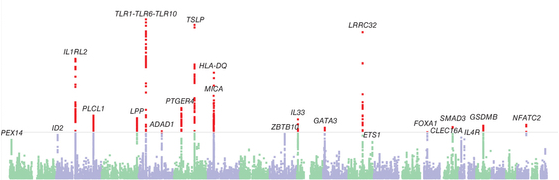A genome-wide association meta-analysis of self-reported allergy identifies shared and allergy-specific susceptibility loci
Nat Genet, 2013 June 30.
Summary: Sixteen associations with allergies, eight of them shared with asthma
Links: Nature Genetics
33
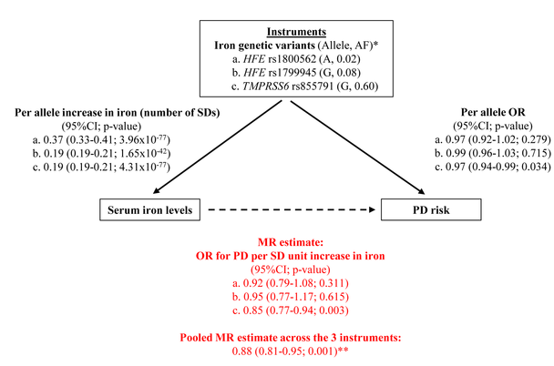32
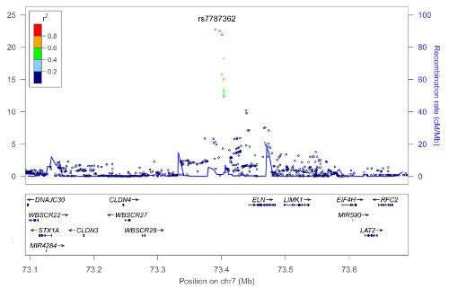Genome-Wide Association Analysis Implicates Elastic Microfibrils in the Development of Nonsyndromic Striae Distensae
J Invest Dermatol, 2013 Apr 30
Summary: Variants near the elastin gene influence stretch marks
Links: JID
31
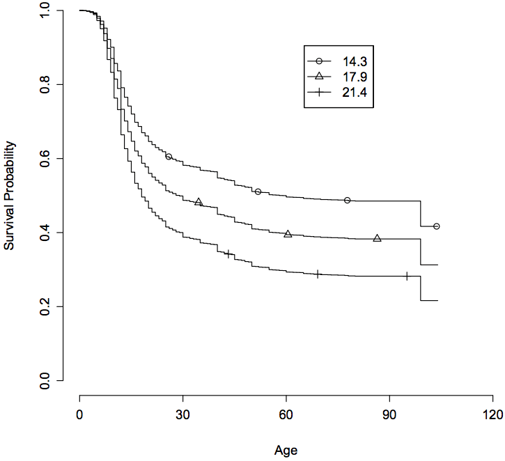Genome-wide analysis points to roles for extracellular matrix remodeling, the visual cycle, and neuronal development in myopia
PLoS Genet., 9(2): e1003299.
Summary: Twenty-two associations for myopia age of onset, many of which are near genes with interesting roles in vision development.
30
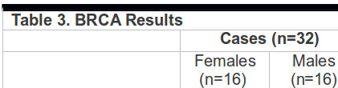Dealing with the unexpected: Consumer responses to direct-access *BRCA* mutation testing
PeerJ, 1:e8.
Summary: How do people respond to learning their BRCA status via 23andMe?
Links: PeerJ
29
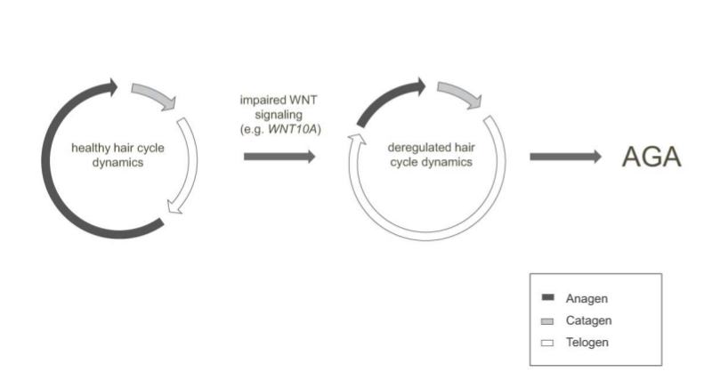Androgenetic alopecia: identification of four new genetic risk loci and evidence for the contribution of WNT-signaling to its etiology
J Invest Dermatol, 2013 Jan 28.
Summary: Four new loci for male-pattern baldness.
Links: JID
28
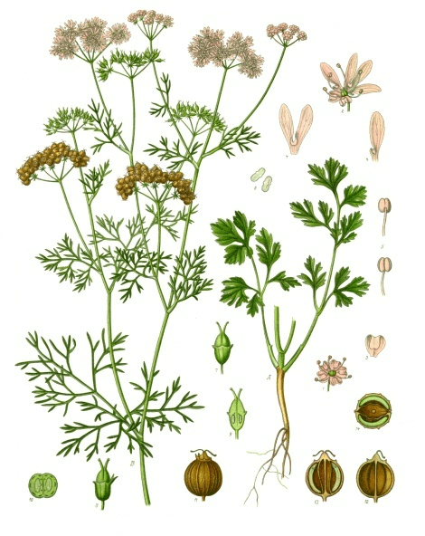A genetic variant near olfactory receptor genes influences cilantro preference
Flavour, 1:22, Dec 2012.
Summary: We uncover a cluster of olfactory receptor genes that play a role in cilantro dislike.
Press: Nature NPR Gizmodo BoingBoing MetaFilter Business Insider Huffington Post
27
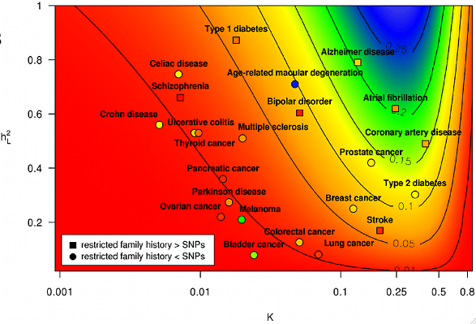Comparison of Family History and SNPs for Predicting Risk of Complex Disease
PLoS Genet., 8(10): e1002973, October 2012.
Summary: We develop models based on quantitative genetic theory to analyze and compare family history and SNP-based risk prediction models.
Links: PLoS
Press: SF Chronicle
26
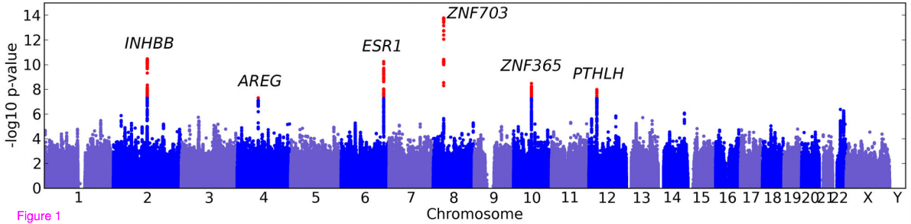Genetic variants associated with breast size also influence breast cancer risk
BMC Med Genet, 13(1):53, Jun 2012
Summary: We discover a number of SNPs associated with breast size. Surprisingly, several are also involved in breast cancer.
Links: BMC
Press: Jezebel Huffington Post The Telegraph
25
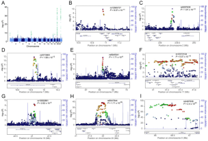Six novel susceptibility Loci for early-onset androgenetic alopecia and their unexpected association with common diseases
PLoS Genet., 8(5):e1002746, May 2012.
Summary: A large meta-analysis of male-pattern baldness uncovers unexpected connections with Parkinson's disease
Links: PLoS
24
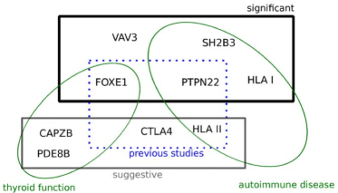Novel associations for hypothyroidism include known autoimmune risk loci
PLoS ONE, 7(4):e34442, 2012.
Summary: A GWAS for hypothyroidism implicates genes involved in both autoimmune disorders and thyroid function.
Links: PLoS
23
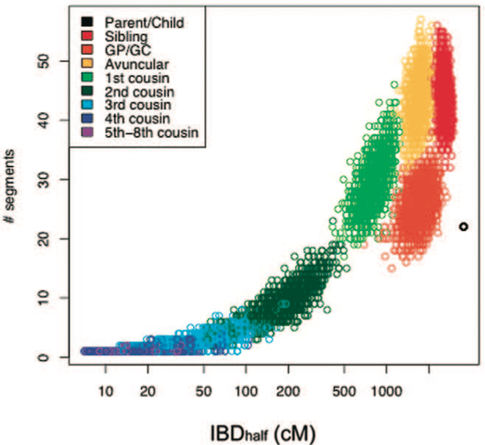Cryptic distant relatives are common in both isolated and cosmopolitan genetic samples
PLoS ONE, 7(4):e34267, 2012.
Summary: An analysis of the number of cryptic distant relatives among various populations.
Links: PLoS
22
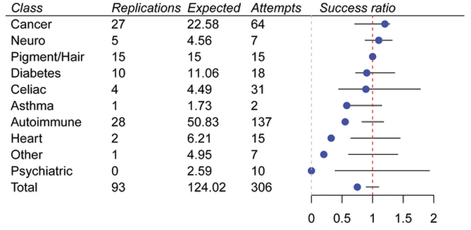Efficient replication of over 180 genetic associations with self-reported medical data
PLoS ONE, 6(8):e23473, 2011.
Summary: Replication of many associations using the 23andMe database.
Links: PLoS
21
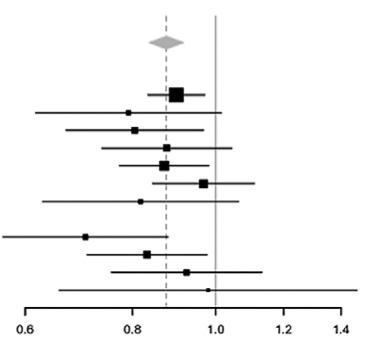Comprehensive research synopsis and systematic meta-analyses in Parkinson's disease genetics: The PDGene database
PLoS Genet., 8(3):e1002548, 2012.
Summary: A comprehensive collection and meta-analysis of all genetic research in Parkinson's disease.
Links: PLoS
20
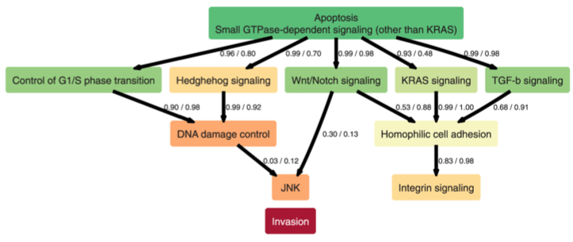The temporal order of genetic and pathway alterations in tumorigenesis
PLoS ONE, 6(11):e27136, 2011.
Summary: Analysis of mutation accumulation in cancer using next-generation sequence data and conjunctive Bayesian networks.
Links: PLoS
19
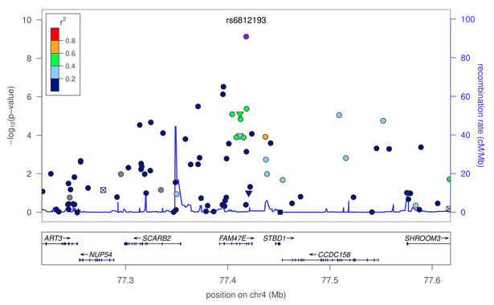18
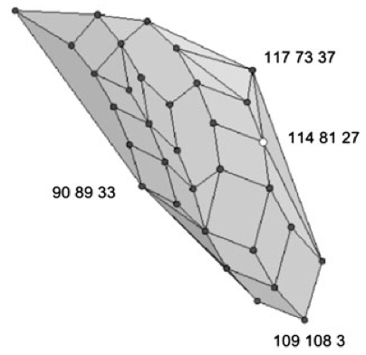Parametric analysis of alignment and phylogenetic uncertainty
Bull. Math. Biol., 73:795--810, Apr 2011.
Summary: We show how to analyze the robustness of phylogenies to perturbations in alignment parameters.
Links: BMB
17
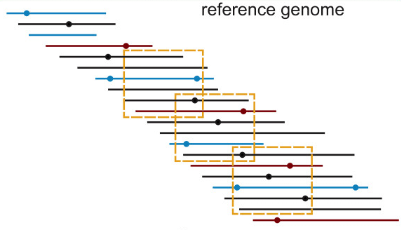16
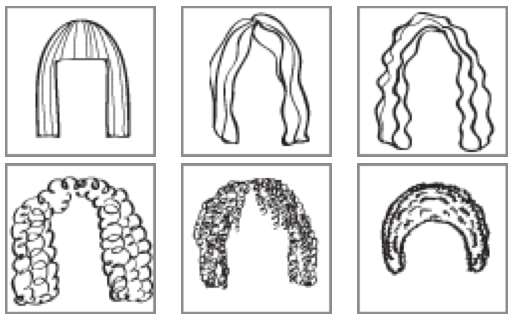15
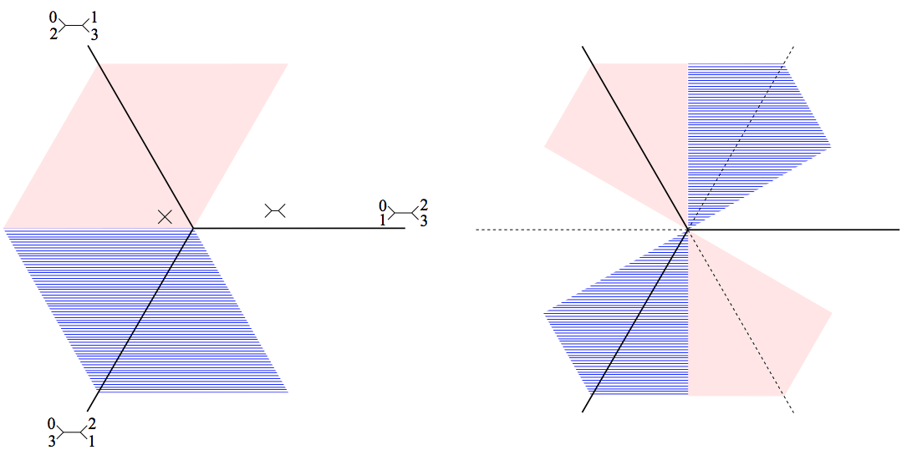14
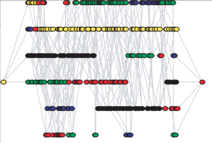Viral population estimation using pyrosequencing
PLoS Comput. Biol., 4:e1000074, Apr 2008.
Summary: We show how to reconstruct an entire viral population from next-generation sequencing data.
Links: PLoS
13
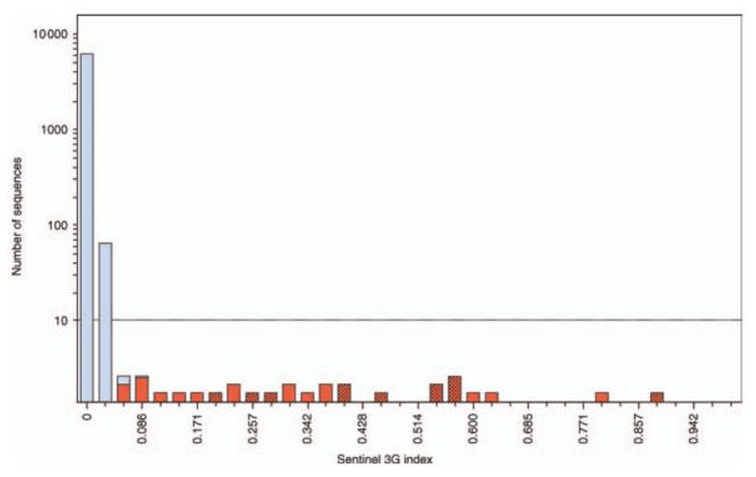Sequence editing by Apolipoprotein B RNA-editing catalytic component and epidemiological surveillance of transmitted HIV-1 drug resistance
AIDS, 22:717--725, Mar 2008.
Summary: We examine APOBEC-mediated editing of HIV-1 and show that this editing is meaningful for the study of drug resistance.
Links: PubMed Central AIDS
12
11
10
Metric learning for phylogenetic invariants
ArXiv preprint, 2007.
Summary: A novel use of machine learning to optimize the use of algebraic techniques in phylogenetics.
Links: arXiv
9
Markov bases for noncommutative Fourier analysis of ranked data
J. Symbolic Comput., 41(2):182--195, 2006.
Summary: A combination of statistics, commutative algebra, and the representation theory of the symmetric group.
Links: DOI
8
Polyhedral conditions for the nonexistence of the MLE for hierarchical log-linear models
J. Symbolic Comput., 41(2):222--233, 2006.
Summary: We give geometric conditions for the existence of the maximum likelihood estimate (MLE) for a hierarchical log-linear model.
Links: DOI
7
Evolution on distributive lattices
J Theor Biol, 242(2):409--420, Sep 2006.
Summary: We develop a new mathematical model in order to study the development of HIV drug resistance.
Links: pdf
6
Algebraic combinatorics for computational biology
PhD thesis, University of California, Berkeley, 2006.
Summary: My PhD thesis.
Links: pdf
5
Phylogenetic algebraic geometry
In C. Ciliberto, A. Geramita, B. Harbourne, R-M. Roig, and K. Ranestad, editors, Projective varieties with unexpected properties, pages 237--255. Walter de Gruyter GmbH & Co. KG, Berlin, 2005.
Summary: An introduction to phylogenetics for algebraic geometers.
Links: pdf
4
Ultra-Conserved Elements in Vertebrate and Fly Genomes
In L. Pachter and B. Sturmfels, editors, Algebraic Statistics for Computational Biology, chapter 22, pages 387--402. Cambridge University Press, Cambridge, UK, 2005.
Summary: An analysis of some of the most conserved DNA sequences
Links: pdf
3
Tree Construction using Singular Value Decompsition
In L. Pachter and B. Sturmfels, editors, Algebraic Statistics for Computational Biology, chapter 19, pages 347--358. Cambridge University Press, Cambridge, UK, 2005.
Summary: A novel technique for constructing phylogenies using linear algebra.
Links: pdf
2
1
$q$-series, elliptic curves, and odd values of the partition function
International Journal of Mathematics and Mathematical Sciences, 22(1):55--66, 1999
Summary: A number theory paper that uses a bit of technical machinery to find odd values of the partition function. A high-school project that won third place in the Westinghouse Science Talent Search.
Links: pdf
Press: Mathland